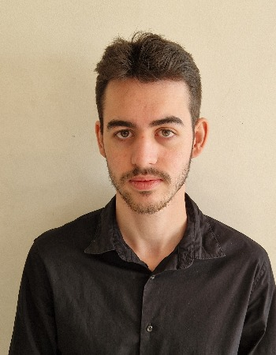

À propos de moi

Je suis un étudiant en 2ème année de BTS SIO option SLAM, passionné par le développement web et les systèmes informatiques. J'aime créer des solutions innovantes et résoudre des problèmes complexes.
Mon Parcours
- 2023-2025 : BTS SIO (SLAM) - Lycée Louis de foix
- 2021-2023 : Baccalauréat STI2D
Centres d'intérêt
- Développement web (frameworks modernes)
- Cybersécurité
- Open Source